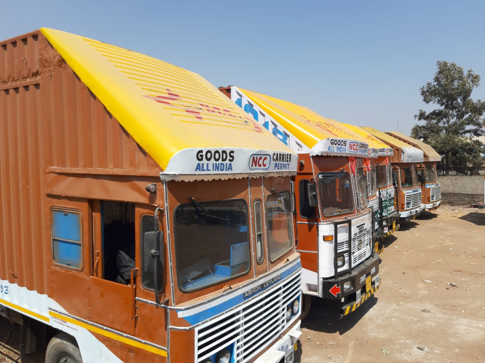

<div class="container pt-1 pb-2">
  <div class="row">
    <div class="col-md-6">
     
    </div>
    <div class="col-md-6">
      <h4>OUR PROFILE</h4>
      <!-- <h4 class="subheading">
        GetLance is a great place to find more clients, and to run and grow your
        own freelance business.
      </h4> -->
      <p>
        The company operates with Head Quarters at Pune and 10 branches at strategic locations across the
                    country. The present employee strength is 400+, whereas in the year 2000 there were one branches and
                    6 employees. <br>

                    NIZAMUDDIN LOGISTICS PRIVATE LIMITED. Survive a long journey and has earned a high reputation over
                    the years. The Contracts are renewed year after year with business volumes growing. This
                    accomplishment was indeed possible with the prime focus of the management on quality of service,
                    efficiency, dependability and reliability. NIZAMUDDIN LOGISTICS PRIVATE LIMITED has been
                    successfully sustaining business commitments to the existing customers and also progressing in the
                    tireless tasks to widen and strengthen the customer base. <br>


                    The Company’s specialization is transportation of Full Truck Loads, ODC consignments and operations
                    through Multi-modal services. NIZAMUDDIN LOGISTICS PRIVATE LIMITED. has a fleet of 400 trucks with
                    closed body Containers which operate for transportation of high-value cargo and has a large fleet of
                    200 attached trucks. <br>

                    NCC’s core team consists of trained professionals in the field of logistics, marketing, finance and
                    operations, who are capable of handling challenging assignments in the most competitive environment.
                    The Company considers human resource as the most valuable and vital asset and the personnel are
                    trained continuously to upgrade their skills and knowledge-base to meet the challenges and demands
                    of customers in a highly competitive milieu. <br>

                    NIZAMUDDIN LOGISTICS PRIVATE LIMITED. understands customer’s specific requirements and suggests
                    innovative and tailor made solutions as the core team has the complete know-how and expertise to
                    move goods of unconventional nature, goods that are required special care and attention.  <br>
        <a class="btn btn-primary" routerLink="/contact-us" target='_blank'>Contact Us</a>
      </p>
    </div>
  </div>
</div>
